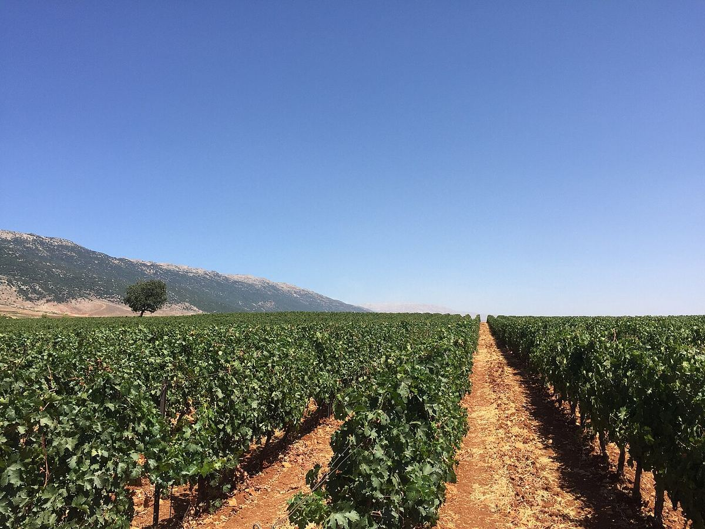

Lebanon
Lebanon is one of the oldest wine lands of the eastern Mediterranean, heir to the Phoenician tradition. Today its production is concentrated in the Bekaa Valley, the source of French-inspired reds and whites from local varieties such as Obaideh and Merwah.

History
The coast and mountains of present-day Lebanon belong to the region where wine was already being made and traded in Antiquity. The Phoenicians, whose port cities such as Byblos, Tyre and Sidon dominated Mediterranean maritime trade for centuries, carried wine in amphorae and helped to spread viticulture along the shores of the Mediterranean. Later, under Roman rule, wine continued to hold a prominent place, as the great temple dedicated to Bacchus at Baalbek, in the north of the Bekaa Valley, still bears witness.
During the long centuries of Ottoman rule, winemaking remained largely in the hands of Christian communities, mainly for religious and domestic use, while much of the grape crop was eaten fresh or distilled into arak, the traditional aniseed spirit of the region. The starting point of modern viticulture is usually placed in 1857, when the Jesuits founded a winery at Ksara, near Zahlé, where they introduced French varieties. The period of the French Mandate, after the First World War, widened the local market for wine and encouraged the appearance of new houses, such as Château Musar, founded in 1930 by Gaston Hochar.
The civil war of 1975 to 1990 made work in the vineyards and the transport of grapes between the Bekaa and the wineries extremely difficult, but some producers continued to make and export wine during those years, which gave Lebanese wine notable international visibility. Since the 1990s the number of wineries has grown considerably, with projects both in the Bekaa and in mountain areas elsewhere in the country.
Climate and soils
The climate is Mediterranean, with rainy winters and long, warm, dry summers. Altitude is the factor that most tempers these conditions: most of the vineyard lies in the Bekaa Valley, a high plateau between the Mount Lebanon and Anti-Lebanon ranges, where cool nights and cold winters, sometimes with snow, help the grapes keep their acidity. The dry summers reduce disease pressure on the vines. Soils are varied, with plenty of limestone, clay and areas of gravel and stone.
Besides the Bekaa, vines are grown on the slopes of Mount Lebanon and in areas such as Batroun, in the north, or the Chouf and Jezzine, in the south, often on terraces and at high altitude.
Grape varieties and styles
French influence is reflected in the vineyard. Cinsault is one of the country’s historic varieties, together with Carignan and Grenache, and since the late twentieth century Cabernet Sauvignon, Syrah, Merlot and Mourvèdre have been widely planted. Among the whites, international varieties such as Chardonnay, Sauvignon Blanc and Viognier sit alongside two native grapes that have attracted growing interest: Obaideh and Merwah, traditionally grown in mountain areas.
The best-known style is the blended red, often in a Bordeaux or Mediterranean mould, with ripe fruit, structure and, at its best, good ageing potential. Whites, rosés and some sweet wines are also made, and a significant share of the grapes still goes to arak.
Regulations
Lebanon does not have a system of designations of origin comparable to those in Europe. Labels usually state the area of origin, such as the Bekaa, and the sector is organised around producer associations that promote Lebanese wine abroad. Most wineries are private companies, from historic houses to small family projects, and a large part of quality production is exported.